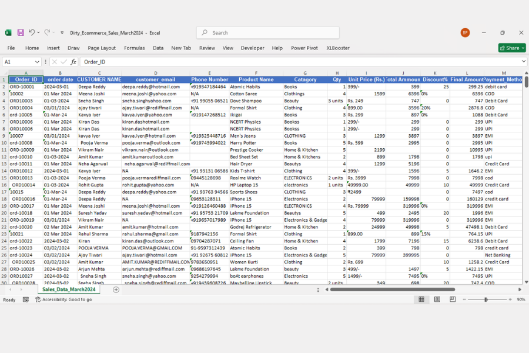
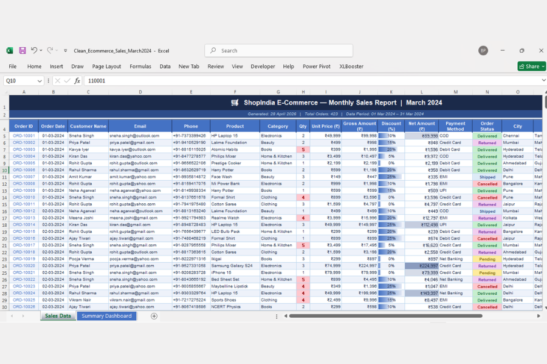
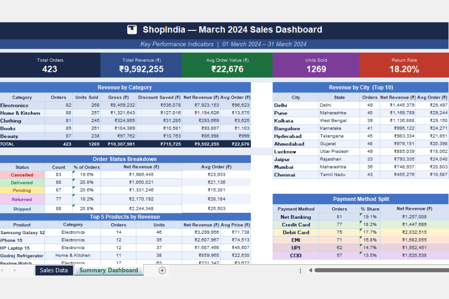

Why Data Cleaning is the Most Important Step Before Any Business Report
From Messy Data to Smart Decisions: The Hidden Power of Data Cleaning — a real story from Jamshedpur that every business owner needs to read.
You won't believe this…
A business owner once told me:
And when I opened his Excel file…
It wasn't data.
It was CHAOS.
- Duplicate entries scattered across sheets
- Missing values in critical columns
- Dates in 5 different formats
- Numbers stored as text — calculations breaking
- Wrong calculations in total amount column
At that moment, one thing became crystal clear:
Data doesn't fail businesses. Dirty data does.
The Real Problem
Most business owners think:
But the reality is very different.
What Actually Happens
Sales numbers don't match across reports. Different teams have different totals. Management decisions are based on guesswork. Hours get wasted fixing errors instead of analyzing them.
And the biggest issue? You start trusting the wrong numbers.
One wrong figure in your MIS report can change your entire business strategy. And if that report was built on dirty data — everything collapses.

❌ Raw dirty data: Inconsistent formats, duplicate entries, wrong values — impossible to trust
Step 1: Data Cleaning — The Game Changer
This is where everything changes.
Data cleaning is not just "formatting your Excel"… It is the process of making your data usable, reliable, and decision-ready.
Here's what professional data cleaning actually involves:
- Remove all duplicate records — keeping only the correct version
- Fix missing values — intelligently, based on business context
- Standardize all formats — dates, phone numbers, currency, categories
- Correct wrong entries and impossible values
- Structure the data properly — rows, columns, data types all correct
- Validate every value against business rules
Sounds simple? It's not.
Because one small mistake here = one wrong business decision later. The cost of bad data is always higher than the cost of cleaning it.
Industry Fact
According to IBM, bad data costs businesses in the US alone $3.1 trillion per year. In India, thousands of small and medium businesses in cities like Jamshedpur, Ranchi and Bokaro are making wrong decisions every day because of dirty Excel data.

✅ After data cleaning: Structured, standardized, validated — ready for analysis and reporting
The Turning Point
Now comes the interesting part…
Once the data is clean, something magical happens.
- Hidden patterns start appearing
- Problems reveal themselves that were invisible before
- Opportunities that were buried in noise become visible
- The business story becomes clear
And this is where every business owner says:
But wait — we're still not done.
Step 2: From Clean Data to Smart Dashboard
Clean data alone is not enough. You need a clear visual story that your management team can read in seconds — not hours.
So we convert clean data into:
Simple automated MIS reports
Key KPI metrics at a glance
Actionable business insights
Now instead of scrolling through endless Excel sheets — you see everything in one screen.

📊 Smart dashboard: Clear KPIs, revenue by category, order status, payment breakdown — faster decisions
The Real Impact
After this complete transformation — from dirty data to clean data to smart dashboard — here's what businesses experience:
- Decision making becomes 3x faster — no more waiting for reports, no more wrong numbers
- Reporting errors drop to near zero — automated systems don't make manual mistakes
- Business performance becomes fully visible — you know what's working and what's not
- Owners feel in control — data becomes a tool, not a mystery
- Teams stop wasting time on fixing data and start focusing on growth
You stop guessing… and start knowing.
The Hidden Cost of Ignoring Data Cleaning
Most businesses skip this step. And it costs them far more than they realize.
The Chain Reaction
Dirty data → Wrong MIS reports → Wrong business strategy → Financial loss. It's not a technical problem. It's a business risk.
And the worst part? You won't even know when it's happening. Because the reports look fine on the surface. The numbers are there. The charts look good. But they're built on a broken foundation.
This is exactly why data cleaning is not optional — it is the foundation of every smart business decision.
Final Thought
Before you invest in marketing, ads, or business expansion — ask yourself one question:
Because if your data is not clean — even the best strategies will fail.
The most successful businesses in Jamshedpur, Ranchi, and across Jharkhand are not the ones with the most data. They are the ones with the cleanest, most reliable data — and systems that turn it into daily decisions.
Want to See What's Wrong in Your Data?
Get a FREE Data Consultation — send us your file, and we'll show you exactly what's messy and how to fix it. No commitment, no cost.
📥 Download the Real Example File
See it yourself — the actual messy data and the cleaned version with dashboard used in this article. Open it in Excel to explore every error, every fix, and the final result.
Download Free Sample (.xlsx)About VRINDA AI ANALYTICS
At Vrinda AI Analytics, we don't just create reports — we transform messy, chaotic data into decision-making systems.
From cleaning your raw data to building automated MIS reports and Power BI dashboards — we help businesses in Jamshedpur, Ranchi, Dhanbad, Bokaro and across Jharkhand, Bihar, West Bengal, Uttar Pradesh and all of India understand their business clearly and act on it confidently.
- Data cleaning & validation services
- Full MIS system setup & automation
- Power BI dashboard development
- Excel automation & macro development
- Email reporting system
📞 +91 6204829055 · 📧 info@vrindaai.com · 🌐 vrindaai.com